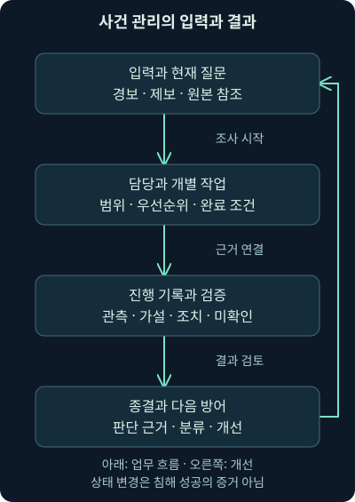
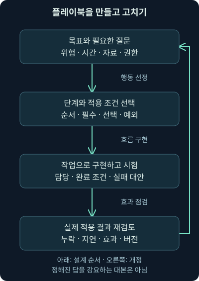
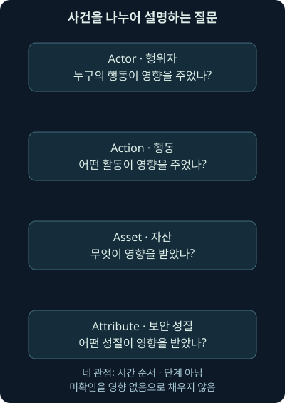

사건 기록·플레이북·분류와 운영 지표
첫째 날 9강. 사건 관리의 입력·작업·플레이북·종결·분류를 연결하고, 자체 가중 점수와 시간 지표를 해석합니다.
1. 조사는 진행됐는데 기록을 찾을 수 없다면
오전 근무자는 수상한 인증을 확인했고, 오후 근무자는 관련 단말을 살펴봤습니다. 그런데 퇴근 무렵 “누가 어느 범위까지 확인했나요?”라는 질문에 답하려면 검색 화면, 메신저, 개인 메모를 모두 뒤져야 합니다. 경보를 찾는 데 성공했어도 조사가 이어지는 구조는 아직 없는 셈입니다.
8강에서 탐지 조건과 실제 위험을 나눠 판단했습니다. 이번 9강에서는 그 판단을 사건 기록, 담당 업무, 플레이북, 분류와 운영 지표로 연결합니다. 다음 10강은 TheHive의 구성 요소와 자체 기록 파일을 이용한 안전한 실습입니다. 특정 제품의 버튼을 외우기 전에 어떤 정보를 잃지 않아야 하는지부터 이해해 봅시다.
회사·시각·계정·기록·점수는 자체 가상 예제입니다. 점수 계산 코드는 직접 실행해 확인했습니다. 실제 사건·계정·단말·제품을 조사하거나 변경한 결과가 아닙니다. 본문은 접근한 본 교재의 개념 범위를 바탕으로 독립적으로 작성했으며 별도 워크북·원본 VM을 실행한 것으로 표현하지 않습니다.
2. 병원의 차트처럼 한 조사에 필요한 연결점을 만듭니다
병원의 차트에는 검사 결과뿐 아니라 어떤 문제를 확인하려는지, 누가 진료했는지, 다음에 무엇을 할지가 함께 남습니다. 보안 조사에도 이런 연결점이 필요합니다. 사건 관리 시스템, IMS는 Incident Management System의 약자로, 조사와 대응의 기록·담당·상태·관련 자료를 관리하는 체계입니다. 보안 대응 플랫폼이라는 뜻의 SIRP, Security Incident Response Platform이라는 이름을 쓰기도 합니다.
그 안에서 케이스, case는 한 조사 단위를 담는 묶음입니다. 티켓, ticket은 그 묶음이나 업무 요청을 부르는 이름으로 쓰입니다. 제품에 따라 이름과 구조가 다르므로 “티켓 하나가 곧 침해 한 건”이라고 가정하지 않습니다. 정상으로 설명되는 경보 조사도 추적할 수 있어야 합니다.
차트 비유가 완전히 같은 것은 아닙니다. 보안에서는 여러 경보가 한 케이스에 연결되고, 처음 한 사건으로 보인 것이 별개 조사로 나뉘기도 합니다. 원본 관측과 도구의 판단, 아직 검증하지 않은 가설을 분리해 연결하는 것이 중요합니다.
3. 자료 보관 역할을 여섯 질문으로 나누기
“중앙 도구가 하나면 모두 해결되지 않을까요?”라고 생각할 수 있습니다. 우선 제품 수보다 역할을 나눠 보세요. 대기 중인 경보와 진행 중 조사는 누가 관리하는가, 위협 관련 지식은 어디에 쌓는가, 원본 로그는 어디서 검색하는가, 반복 수집은 어떻게 실행하는가, 코드와 운영 문서는 어떻게 갱신하는가, 형태가 일정하지 않은 첨부 자료는 어디에 보관하는가라는 질문입니다.
위협 정보 플랫폼, TIP는 Threat Intelligence Platform으로, 관측 단서와 그 의미·출처·분석을 저장하고 다른 도구와 교환하는 역할입니다. 다음 모듈에서 자세히 배웁니다. 지금은 사건 관리의 담당·조치 상태와, 여러 사건에서 재사용하는 위협 지식이 같지 않다는 점을 잡으면 됩니다.
7강에서 배운 SIEM은 로그 검색과 탐지 결과를 연결하고, SOAR는 여러 도구의 반복 작업과 흐름을 연결합니다. 코드 저장소는 스크립트·설정·규칙의 변경 이력을 관리하는 곳이고, 지식 저장소는 조사 방법·운영 문서·알려진 정상 현상 등을 정리하는 곳입니다. 첨부 파일·이미지·기타 비정형 자료에는 별도 보관 위치와 접근 통제가 필요할 수 있습니다.
| 역할을 확인할 질문 | 관리하는 자료의 예 | 케이스에 남길 연결 |
|---|---|---|
| 지금 누가 조사 중인가 | 담당·상태·작업·결론 | 케이스와 작업 식별자 |
| 무엇과 연관된 위협인가 | 단서·출처·분석·유효성 | 정보의 버전과 참조 |
| 원본에서 무엇이 보였나 | 인증·연결·요청·감사 기록 | 출처·조회 조건·원본 위치 |
| 어떤 자동 작업을 했나 | 실행 입력·결과·실패 | 실행 ID와 실제 효과 |
| 어떤 절차와 코드를 썼나 | 플레이북·스크립트·변경 이력 | 적용 버전과 예외 |
| 첨부 자료는 어디 있나 | 이미지·내보낸 원본·문서 | 접근 권한과 보존 위치 |
한 제품이 여러 역할을 제공할 수 있고, 별도 제품들이 연결될 수도 있습니다. 표는 여섯 제품을 구매하라는 목록이 아닙니다. 기능이 통합되어 있어도 원본 자료의 보관과 조사 결론의 기록을 구별해야 합니다. SIEM도 입력만 모으는 상자로 한정하지 않습니다. 자체 탐지·보강·운영 기록이 생성될 수 있습니다.
4. 경보에서 케이스로 무엇을 옮길까요?
가상 경보 AL-27이 관리자 계정의 새 단말 인증을 표시했다고 합시다. 케이스 제목을 “해킹 확정”이라고 만들면 조사 시작부터 결론을 고정하게 됩니다. “관리자 계정의 새 단말 인증 확인”처럼 현재 질문을 드러내고 관측한 출처·시각·계정·단말·경보 ID를 옮기는 편이 좋습니다.
초기 기록에는 위험을 확인하려는 이유, 영향이 있을 수 있는 자산, 우선순위와 그 근거, 이미 수행한 확인과 남은 질문이 들어갑니다. 자동 입력한 값도 실제 원본의 어느 필드에서 왔는지 알아야 합니다. 도구가 외부 주소를 사용자 단말로 잘못 해석했다면 담당과 검색 범위도 틀어질 수 있습니다.
케이스의 고유 번호와 원본 경보 번호를 함께 유지합니다. 나중에 경보가 병합되거나 원제품의 이름이 바뀌어도 원본을 찾을 수 있어야 합니다. 사용자 제보·운영 장애·외부 통보처럼 자동 경보가 없는 시작점도 수용해야 하며, 완전한 악성 확정을 사건 관리의 유일한 입구로 삼지 않습니다.
5. 입력·조사·출력으로 보는 관리 흐름
케이스의 입력은 단순히 경보 제목이 아닙니다. 원본 참조와 현재 질문, 담당과 확인할 조건이 함께 들어갑니다. 진행 중에는 작업 기록과 관련 단서, 자동 수집 결과, 조치·승인·검증 결과가 추가됩니다. 출력은 종결된 표 한 줄에 그치지 않고 다른 사람이 재사용할 수 있는 판단 근거와 개선 항목입니다.

그림을 위에서 아래로 읽으며 “이 단계에서 누가 무엇을 추가하나?”를 생각해 보세요. TIP와 검색·자동화 도구는 관련 자료를 제공할 수 있지만 결론을 대신 보장하지 않습니다. 외부 서비스에 조회하거나 자료를 넘기는 작업은 전송 범위·업무 규정·권한을 확인해야 합니다.
6. 케이스 담당자와 작업 담당자를 나눕니다
작업, task는 “대상 계정의 인증 결과를 대조한다”처럼 확인 목적과 완료 조건을 가진 업무 단위입니다. 케이스 담당자는 전체 진행과 위험·인계를 관리하고, 개별 작업 담당자는 맡은 질문에 답할 근거를 모읍니다. 모든 자료를 혼자 분석해야 케이스 담당자가 될 수 있는 것은 아닙니다.
신입 분석가가 인증과 승인 기록을 대조하고, 숙련 분석가가 단말의 복잡한 실행 흔적을 확인할 수 있습니다. 둘의 작업이 어떤 질문으로 이어지는지 공유하면 협업과 학습이 함께 이루어집니다. 반대로 모두가 “다른 사람이 했겠지”라고 생각하지 않도록 담당·기한·막힌 이유를 명시합니다.
작업을 완료했다는 표시와 케이스 전체를 종결했다는 표시는 다릅니다. 자료를 요청했지만 아직 받지 못했다면 요청 작업을 했다는 사실과 분석 미완료를 구별해야 합니다. 다음 근무자에게는 원본 위치·현재 가설·미확인 범위·다음 행동을 함께 넘깁니다.
7. 좋은 작업 기록은 재검색을 줄여줍니다
작업 로그, worklog는 작업을 진행하며 확인한 사실·조회 조건·판단을 남긴 기록입니다. “이상 없음”보다 “09:00~09:30 UTC, 인증 서버 A에서 계정 analyst-a의 성공·실패 기록을 조회했고 성공 한 건을 확인했다”가 재현에 도움이 됩니다. 단, 이 문장은 기록 방식의 가상 예이며 실제 조회 결과가 아닙니다.
그 뒤 “승인된 단말 교체일 가능성”이라는 가설과 “자산 변경 승인·후속 권한 변경 대조 필요”라는 다음 작업을 분리합니다. 검색 결과가 없으면 수집 대상·보존·지연·시간대·조회 조건의 한계를 남깁니다. 네트워크 증거라면 방향·경로·암호화·재조립과 손실도 확인합니다.
화면 캡처와 표는 설명을 도울 수 있지만 검색 조건과 원본 참조를 대신하지 못합니다. 민감한 토큰·개인정보·비밀 값이 그대로 들어가지 않도록 기록 범위를 정하고, 원본을 보관하는 위치와 접근 권한도 관리합니다. 본 강의에는 원본 교재의 화면을 게시하지 않습니다.
8. 플레이북은 답을 강요하는 대본이 아닙니다
매번 같은 종류의 질문을 처음부터 생각하면 빠뜨리거나 중복하는 일이 생깁니다. 플레이북, playbook은 특정 유형의 경보·사건에 대해 기대하는 확인과 대응 행동을 정리한 절차입니다. 팀마다 범위가 다르며, 자세한 도구 조작 절차와 구분해 쓰기도 합니다.
좋은 단계에는 목적·입력·확인할 자료·완료 조건·실패 시 대안이 있습니다. “악성 여부 확인” 하나로 모두 묶으면 초보자가 다음 행동을 알기 어렵습니다. 반대로 화면의 모든 클릭을 업무 절차에 고정하면 제품이 바뀔 때 전체 절차를 고치게 됩니다. 판단 흐름과 버전별 조작 안내를 연결해 관리하면 이 문제를 줄일 수 있습니다.
필수 단계는 종결 전에 충족하거나 정해진 예외 처리가 필요한 단계이고, 선택 단계는 사건 조건에 따라 적용하는 단계입니다. 선택이라고 가치가 없는 것은 아닙니다. 필수라고 해도 적용되지 않는 이유가 명확한 경우에는 권한 있는 검토와 이유를 기록해야 하며, 조용히 체크만 해서는 안 됩니다.
9. 메일 조사에서 순서와 조건을 붙여보기
가상 조직에서 첨부 자료가 수상하다는 제보를 받았습니다. 처음에는 제보와 원본을 보존하고 대상·시각·현재 위험을 파악합니다. 메일이 실제 누구에게 도달했는지, 첨부를 열었는지, 단말에서 실행이 있었는지, 자료 접근이나 인증 정보 입력이 있었는지를 서로 다른 질문으로 나눕니다.
“URL 전부 차단 → 모든 비밀번호 초기화”처럼 무조건 실행하는 순서는 조사 질문과 업무 영향을 건너뜁니다. 시급한 위험이면 정해진 권한과 절차 안에서 확산 억제를 먼저 할 수 있지만, 그 조치가 어떤 근거와 범위에서 필요한지 남겨야 합니다. 증거 보존과 긴급 억제의 순서도 환경과 위험에 맞춰 결정합니다.
수신함에서 메일을 제거해도 이미 실행된 파일이나 탈취된 세션이 사라지는 것은 아닙니다. 비밀번호를 바꿔도 모든 제품의 기존 세션이 자동으로 종료된다고 가정하지 않습니다. 조치마다 적용 대상과 결과를 확인하는 단계를 둡니다. 이 강의는 메일 삭제·차단·계정 변경을 실제 수행하지 않았습니다.
10. 플레이북을 만드는 다섯 가지 연결
먼저 “어떤 위험을 얼마나 빨리 판단·통제하려는가?”라는 목표를 정합니다. 이어 가능한 확인과 조치를 모으고, 목적에 맞는 단계와 순서를 선택합니다. 어떤 단계를 필수로 할지, 어떤 조건에서 선택·생략할지 정한 뒤 도구의 작업 목록으로 구현합니다. 마지막으로 실제 적용 결과를 검토해 고칩니다.
단계를 고를 때는 숙련 분석가뿐 아니라 실제로 사용할 신입 분석가와 운영 담당자의 의견도 봅니다. 필요한 로그가 없거나 야간에 요청 권한이 없다면 문서상 완벽한 절차도 진행되지 않습니다. 막히는 지점의 대안과 연락·인계 경로를 마련해야 합니다.
2026년 11월 4일 확인한 RE&CT 원저장소는 대응 행동을 생각할 때 참고할 지식 자료입니다. 참고 절차를 그대로 가져오기보다 현재 자산·도구·권한과 목표에 맞게 검토합니다. 저장소가 존재한다는 사실이 우리 환경에서 각 행동을 실행해도 된다는 허가나 검증을 뜻하지 않습니다.

그림의 작업 목록은 끝이 아닙니다. 실제로 시간이 오래 걸리거나 빠진 질문이 드러나면 단계의 분할·병합·자료 요구를 고칩니다. 적용한 플레이북 버전을 케이스에 남겨야 나중에 같은 이름의 절차가 바뀌어도 당시 판단을 이해할 수 있습니다.
11. 제품을 고를 때는 하루의 업무를 시험해 봅니다
일반 업무 티켓 도구, SIEM에 포함된 사건 기능, 보안 대응 전용 도구가 후보가 될 수 있습니다. 전용 도구는 관측값·조사·연동 기능이 맞을 수 있지만 이름만으로 최선이라고 결정하지 않습니다. 유료·무료·공개 소스 여부도 실제 작업 흐름과 운영 비용을 대신 설명하지 못합니다.
가상 경보 하나를 넣어 필드를 보존하고, 케이스와 작업 담당을 나누고, 긴 메모·이미지·표를 읽고, 관련 단서를 검색하고, 교대와 종결·재개까지 해보세요. 자주 쓰는 키보드 이동과 검색, 대량 편집, 플레이북 변경, 자동화 실패를 사람이 알아보는지까지 확인하면 숨은 비용이 보입니다.
지식 문서 연결, 작업별 기록, 사용자 정의 상태, 여러 건 열기·닫기·수정, 위협 정보 연동, 풍부한 메모와 그림, 빠른 탐색은 기능 이름으로만 비교하지 않습니다. 예를 들어 대량 종결은 편하지만 서로 다른 원인의 항목을 섞어 닫으면 조사 근거를 잃습니다. 어떤 조건으로 골랐고 예외가 무엇인지 검토·기록할 수 있어야 합니다.
12. 종결은 빈칸을 감추는 단계가 아닙니다
가상 새 단말 인증을 승인된 변경으로 설명했다면 어떤 기록을 대조했고 어느 범위까지 설명되는지 적습니다. 공격으로 판단했다면 관측한 단계·영향·조치·검증과 남은 위험을 나눕니다. 자료가 없어 판단하지 못한 항목은 정상으로 바꾸지 말고 불명확한 상태와 인계 조건을 남깁니다.
종결 요약에는 처음 질문, 주요 근거, 결론과 확신의 한계, 실제 수행한 조치와 그 효과, 남은 후속 업무가 이어져야 합니다. 모든 체크가 찼다는 것만으로 완전 복구를 뜻하지 않습니다. 반대로 조사용 케이스를 종결했다는 행정 상태만으로 조직의 모든 관련 위험이 사라졌다고 말하지 않습니다.
2026년 11월 4일 확인한 NIST SP 800-61 Rev. 3은 2025년 4월 Rev. 2를 대체하며 탐지·대응·복구를 위험 관리와 연결합니다. 오래된 절차의 상태 이름을 현행 의무처럼 고정하기보다 현재의 사건 기준과 대응·복구 계획에 맞춰 기록합니다. 여기서는 특정 법률의 신고·보관 기한을 정하지 않습니다.
13. 분류는 나중에 답할 질문을 위해 만듭니다
분류 체계, taxonomy는 사건을 일정한 기준으로 나누는 용어와 규칙의 집합입니다. “피싱”, “메일”, “계정”을 같은 한 칸의 선택지로 두면 전달 경로·행동·영향 자산이 섞입니다. 분석가마다 다른 항목을 고르면 건수를 합쳐도 같은 질문에 답하지 못합니다.
먼저 “어떤 전달 방식이 실제 피해로 이어졌나?”, “어떤 자산에서 시간이 오래 걸리나?”, “어떤 유형에 새로운 수집이 필요한가?”처럼 질문을 정합니다. 그 질문에 필요한 항목을 설계하고 정의·예시·모르는 경우의 값을 공유합니다. 분류를 바꿨다면 적용일과 이전 자료의 연결 방법도 남깁니다.
간단한 체계는 입력하기 쉽지만 필요한 차이를 놓칠 수 있습니다. 세밀한 체계는 더 많은 질문에 답할 수 있지만 일관되게 채우기 어려울 수 있습니다. 조직의 자체 체계를 쓰더라도 목적과 정의가 맞으면 쓸 수 있습니다. 다만 다른 조직과 비교할 때는 분류·범위·분모의 차이를 먼저 확인합니다.
14. VERIS의 네 질문으로 맥락을 나누기
VERIS는 Vocabulary for Event Recording and Incident Sharing으로, 사건 정보를 일관되게 기록·공유하기 위한 체계입니다. 핵심 관점을 네 개의 A로 나눕니다. Actor는 누가 영향을 일으켰는지, Action은 어떤 행동이 있었는지, Asset은 어떤 자산이 영향을 받았는지, Attribute는 어떤 보안 성질이 영향을 받았는지를 묻습니다.
행위자는 외부·내부·협력 관계 등으로 나눠 볼 수 있고 모르는 경우도 남깁니다. 행동에는 악성 프로그램, 비인가 접근, 사람을 속이는 사회적 유인, 물리적 행동뿐 아니라 오류나 권한의 부적절한 이용 같은 관점도 있습니다. 행위자 설명과 행동 설명을 2026년 11월 4일 확인했습니다. 실제 입력에는 사용하는 스키마의 허용 항목을 따라야 하며 이 문단이 전체 선택지 목록을 대신하지 않습니다.
자산은 단순히 “서버인가, 노트북인가?”만 묻지 않습니다. VERIS 자산 설명은 종류와 수, 소유자, 관리 주체, 호스팅·보관 주체를 구별합니다. 회사가 소유하지만 외부 업체가 관리하는 서버처럼 주체가 다를 수 있기 때문입니다. 해당 설명도 2026년 11월 4일 확인했으며 한 사건에 여러 자산과 관리 관계가 포함될 수 있습니다.
보안 성질에는 기밀성·무결성·가용성에 연결되는 확장 관점도 있습니다. 2026년 11월 4일 확인한 VERIS 보안 성질 설명은 기밀성과 소유·통제, 무결성과 진정성, 가용성과 유용성을 짝지어 봅니다. 소유·통제는 자료를 의도한 주체가 관리하고 있는지, 진정성은 자료나 행위가 진짜이며 의도와 부합하는지, 유용성은 목적에 맞게 쓸 수 있는지를 묻습니다. 장치를 잃어 통제하지 못하는 상황과 비인가 열람을 확인한 상황을 나누어 기록하는 데도 도움이 됩니다.
가상 사례에서 외부에서 보낸 유인 메일이 직원 단말로 도달했지만 실행 여부는 모른다고 합시다. 외부 행위자와 사회적 유인이라는 설명이 가능하더라도 기밀 자료 유출까지 자동으로 채우지는 않습니다. 관련 계정이 직원 것이라는 이유로 행위자를 내부자로 확정하는 것도 잘못입니다. 행위자와 사용된 계정은 다릅니다.
2026년 11월 4일 확인한 VERIS 시작 안내는 필요한 질문에서 출발해 단계적으로 도입하고 여러 항목에서 Unknown을 사용할 수 있음을 설명합니다. Unknown은 모름을 남기는 값이며 “해당 없음”이나 “영향 없음”과 같지 않습니다. 공식 문서의 예시 schema_version을 현재 전체 스키마의 최신 버전으로 읽지도 않습니다.

그림에서 각 상자의 질문에 답할 근거가 있는지 따로 확인하세요. 한 칸이 채워졌다고 다른 칸까지 따라 채우지 않는 것이 핵심입니다. 표준 형식으로 자료를 공유하려면 선택한 스키마 버전과 필수 조건·허용 값을 별도로 검증해야 합니다. 이번 예제는 VERIS 호환 JSON을 생성한 실습이 아닙니다.
15. 과거의 국가 단위 점수와 우리 조직의 우선순위
과거 자료에는 미국 CISA의 NCISS, National Cyber Incident Scoring System을 소개하며 0~100으로 정규화한 점수와 우선순위 등급을 설명합니다. 기능 영향, 관측된 활동, 활동 위치, 행위자 특성, 정보 영향, 복구 가능성, 부문 간 의존, 잠재 영향을 나누는 관점은 위험 질문을 만들 때 참고할 수 있습니다.
과거 예시는 긴급·심각·높음·중간·낮음·기준 수준처럼 점수에 운영 등급을 연결합니다. 이름을 번역해 적은 것이며 이 강의가 현행 미국 정부의 신고·승격 기준을 지정하거나 우리 조직에 그대로 적용하는 것은 아닙니다. 평가 항목은 비슷해도 목적과 파급 범위, 등급별 행동 조건이 다를 수 있습니다.
그러나 국가 차원의 영향과 한 회사의 운영 우선순위는 같지 않습니다. 같은 활동도 해당 자산과 다른 조직에 미치는 파급에 따라 판단이 달라질 수 있습니다. 점수가 높다는 것은 조사 가설이 사실로 검증되었다는 뜻도 아닙니다. 어떤 항목이 추정인지, 근거와 평가일이 무엇인지 남깁니다.
2026년 11월 4일 CISA의 NCISS 공식 페이지와 공식 PDF를 직접 조회했으나 HTTP 403으로 본문에 접근하지 못했습니다. 따라서 과거 등급·가중치·운영 적용 조건을 현행 규칙으로 확인했다고 쓰지 않습니다. 아래 계산은 이 체계의 공식 구현이 아닌, 가중치와 정규화 원리만 이해하기 위한 자체 예제입니다.
16. 작은 가중 점수를 직접 계산해 봅시다
가상 팀이 기능 영향·정보 영향·복구 어려움을 각각 1~5단계로 평가한다고 합시다. 1은 낮음, 5는 높음이며 이 간격을 같게 다룬다는 단순화가 있습니다. 가중치, weight는 어떤 항목을 계산에 얼마나 반영할지 정한 수입니다. 순서대로 가중치 3·2·1을 사용하고 이번 평가값을 4·3·2라고 정합니다.
| 항목 | 자체 평가값, 1~5 | 가중치 | 값 × 가중치 |
|---|---|---|---|
| 기능 영향 | 4 | 3 | 12 |
| 정보 영향 | 3 | 2 | 6 |
| 복구 어려움 | 2 | 1 | 2 |
| 합계 | 단순 합계는 사용하지 않음 | 6 | 20 |
가중합은 4×3 + 3×2 + 2×1 = 20입니다. 가능한 최소 합은 모든 값이 1일 때 1×(3+2+1)=6, 최대 합은 모든 값이 5일 때 5×6=30입니다. 정규화는 서로 다른 범위의 값을 정한 척도에 옮기는 처리입니다. 여기서는 최소를 0, 최대를 100으로 옮깁니다.
따라서 (20−6) ÷ (30−6) × 100 ≈ 58.33입니다. 분자에서 6을 빼는 것은 최소 상태를 0에 놓으려는 것이고 분모의 24는 가능한 합의 전체 폭입니다. 20/30×100으로만 계산하면 최소 상태도 20점이 되어 이 예제의 목표와 달라집니다.
weights = (3, 2, 1)
ratings = (4, 3, 2)
assert len(weights) == len(ratings)
assert all(1 <= value <= 5 for value in ratings)
weighted = sum(w * value for w, value in zip(weights, ratings))
lowest = sum(weights)
highest = 5 * sum(weights)
score = (weighted - lowest) / (highest - lowest) * 100
print(f"weighted={weighted}, min={lowest}, max={highest}")
print(f"training score={score:.2f}")zip은 같은 위치의 가중치와 평가값을 짝짓고, sum은 곱한 값들을 더합니다. all은 모든 값이 허용 범위인지 확인합니다. 두 assert는 조건이 맞지 않으면 계산을 멈추는 검사입니다. 직접 실행하면 weighted=20, min=6, max=30과 training score=58.33이 출력됩니다. 단위는 이 자체 척도의 점수이며 공격 확률 58.33%라는 뜻이 아닙니다.
모르는 영향을 1이나 0으로 대신 넣으면 위험을 낮추는 가정이 몰래 들어갑니다. 미확인은 별도로 남기고 추가 확인이나 불확실성 범위로 다뤄야 합니다. 이 코드도 실수·빈칸·부적절한 가중치까지 처리하는 운영용 평가기가 아닙니다. 숫자에 따른 행동 기준과 검토 책임을 먼저 정해야 점수가 업무에 도움이 됩니다.
17. 지표의 이름보다 시작점과 끝점을 읽습니다
가상 사건의 최초 확인된 비인가 활동은 08:45, 유효한 탐지는 09:10, 분석가 확인은 09:18, 확산 억제 확인은 10:00 UTC라고 합시다. 모두 같은 날짜와 검증된 시계 기준이라는 조건입니다. 이 네 시점을 같은 “처리 시간”으로 합치면 어디를 개선해야 하는지 모릅니다.
| 자체 지표 | 구간 | 시간, 분 |
|---|---|---|
| 관측한 비인가 활동에서 탐지까지 | 08:45 → 09:10 | 25 |
| 탐지에서 분석가 확인까지 | 09:10 → 09:18 | 8 |
| 탐지에서 확산 억제 확인까지 | 09:10 → 10:00 | 50 |
| 분석가 확인에서 확산 억제 확인까지 | 09:18 → 10:00 | 42 |
| 최초 확인된 비인가 활동에서 억제까지 | 08:45 → 10:00 | 75 |
상주 시간, dwell time이라는 말은 비인가 접근의 시작부터 발견 또는 제거·억제 같은 기준 시점까지의 구간에 사용되지만 정의가 다를 수 있습니다. 어떤 끝점을 쓰는지 명시해야 합니다. 분석가가 경보를 확인하는 데 걸린 8분을 공격자의 상주 시간이라고 부르지 않습니다.
08:45가 실제 최초 침입이라는 보장이 없다면 발견까지 25분은 확인된 관측 구간일 뿐 전체 상주 시간을 확정한 값이 아닙니다. 시작을 모르는 사건을 0분으로 평균 내지도 않습니다. 시간대를 맞추고 결측 수·진행 중 사건·집계 기간과 표본을 함께 남겨야 비교가 가능합니다.
18. 어떤 숫자가 어떤 행동으로 이어지나요?
성공한 전달 경로를 알고 싶다면 제보·전달·차단·실행·피해 단계를 구분합니다. 제보 메일 수가 늘었다고 침해가 늘었다고 바로 말할 수는 없습니다. 교육과 제보 문화가 좋아졌거나 중복 신고가 늘었을 수도 있습니다. 반대로 사건 수가 줄었어도 탐지·수집이 끊겼을 가능성이 있습니다.
과부하를 알고 싶다면 미처리 건수와 유입·처리량, 작업 난도와 담당 가능 인원, 대기 시간 분포를 봅니다. 하루 평균 대기열 길이를 구할 때도 정해진 시점의 표본 평균인지 시간에 따른 평균인지 정의해야 합니다. 단순히 완료 건수만 늘리면 어려운 사건을 뒤로 미루는 행동을 유도할 수 있습니다.
지표마다 “어느 조건이면 누가 무엇을 바꾸나?”를 붙입니다. 특정 자료 요청에서 지연이 반복되면 접근·인계 절차를 개선할 수 있고, 같은 전달 경로에서 피해가 누적되면 해당 통제와 수집을 검토할 수 있습니다. 중대한 사건 수와 업무 영향도 함께 봐야 속도만으로 팀의 성과를 오해하지 않습니다.
19. 종결 기록을 다음 방어의 입력으로 돌려줍니다
케이스에서 확인한 정상 설명은 탐지 조정의 자료가 되고, 실제 공격의 전달·실행·영향은 다음 수집과 방어 개선의 근거가 됩니다. 다만 케이스에 포함된 모든 주소를 위협 목록으로 내보내지는 않습니다. 관련된 정상 서비스·피해 자산·공격 단서를 구분하고 그 판단의 출처와 유효 범위를 남깁니다.
잘 정리된 기록은 신입 교육과 플레이북 개정에도 도움이 됩니다. 당시 사용한 도구·규칙·절차 버전을 남기고 현재에도 적용되는지 다시 검토합니다. 예전 작업 로그가 유용하더라도 과거 명령을 현재 운영 환경에서 무조건 실행하는 지침이 되지는 않습니다.
다음 10강에서는 이 구조를 TheHive의 case·task·worklog·observable과 연결합니다. 이어 직접 내려받는 자체 JSON 기록을 검사하며 “필수 업무가 남았는데 종결하려는 상황”과 “검토 근거를 갖춰 기록을 마무리하는 상황”의 차이를 확인하겠습니다.
20. 복습과 바로 읽는 해설
질문 1. SIEM에 로그가 있으니 사건 기록 도구는 필요 없을까요?
해설: 검색 자료와 담당·상태·조치·근거·종결 기록은 역할이 다릅니다. 한 제품 안에 함께 있을 수는 있지만 누가 무엇을 확인했고 다음에 무엇을 할지 이어지는 구조가 필요합니다.
질문 2. 경보 번호를 케이스 번호로 바꿔 적으면 충분할까요?
해설: 둘의 관계를 보존해야 합니다. 한 케이스에 여러 경보가 연결되거나 나뉠 수 있으므로 출처와 원본 ID를 별도로 남깁니다. 자동 입력된 값의 의미도 검토해야 합니다.
질문 3. 자료 요청을 보냈으니 분석 작업도 완료로 처리할까요?
해설: 요청했다는 행동과 결과를 받아 분석한 상태는 다릅니다. 기다리는 자료·담당·기한과 미확인 질문을 남겨야 합니다. 하위 요청의 완료가 전체 조사 완료는 아닙니다.
질문 4. “이상 없음”이라는 메모에는 무엇을 더해야 하나요?
해설: 출처·대상·시각과 시간대·조회 조건·관측 사실·미확인 범위·원본 참조가 필요합니다. 수집이 정상인지도 확인해 빈 결과와 실제 부재를 구별해야 합니다.
질문 5. 수상한 메일이 오면 플레이북의 모든 차단·초기화를 무조건 실행할까요?
해설: 단계별 조건·권한·업무 영향과 근거를 봐야 합니다. 긴급 억제가 필요할 수 있지만 모든 계정 변경이 언제나 필요한 것은 아닙니다. 조치가 기존 세션·이미 실행된 파일에 미치는 효과도 따로 검증합니다.
질문 6. 필수 단계가 적용되지 않으면 조용히 완료 표시를 해도 될까요?
해설: 적용되지 않는 이유와 정해진 검토·예외 처리를 남깁니다. 증거 없이 체크를 채우면 그 단계가 실제 수행된 것처럼 보입니다. 다음 조사자가 완료의 의미를 알아야 합니다.
질문 7. 전용 보안 도구가 일반 티켓 도구보다 언제나 좋을까요?
해설: 실제 업무·연동·접근·이력·비용을 시험해야 판단할 수 있습니다. 담당 분리와 원본 연결, 검색·대량 편집·교대·종결 같은 하루의 흐름으로 평가하는 것이 기능 목록만 읽는 것보다 구체적입니다.
질문 8. 직원 계정이 사용되었으니 VERIS 행위자는 내부자인가요?
해설: 외부인이 탈취한 계정을 썼을 수도 있습니다. 사용된 계정과 행동을 일으킨 행위자를 구분하고 근거가 없으면 미확인으로 남깁니다. 다른 분류 항목도 자동으로 따라 채우지 않습니다.
질문 9. 자체 점수 58.33은 공격 확률 58.33%인가요?
해설: 아닙니다. 임의의 세 항목을 가중·정규화한 점수입니다. 확률 모형을 만들거나 검증하지 않았습니다. 최소·최대 범위와 가중치의 가정도 함께 해석해야 합니다.
질문 10. 영향이 미확인이면 낮은 점수 1을 넣어도 될까요?
해설: 미확인을 낮은 영향으로 가정하는 오류입니다. Unknown과 영향 없음은 다릅니다. 추가 확인이나 별도 불확실성 처리 기준을 적용해야 합니다.
질문 11. 가상 사건의 분석가 확인 8분을 상주 시간으로 보고해도 될까요?
해설: 탐지부터 확인까지의 반응 구간입니다. 상주 시간은 비인가 활동 시작과 정한 끝점을 사용해야 합니다. 최초 확인된 활동이 실제 최초 침입인지도 별도로 검증해야 합니다.
질문 12. 이번 달 사건 건수가 줄었으니 방어가 개선되었나요?
해설: 그런 가설을 세울 수는 있지만 수집·탐지 누락, 분류 변경, 중복 묶음, 신고량과 업무 변화도 봐야 합니다. 영향과 범위·기간·분모를 함께 비교하고, 수치가 어떤 조치와 연결되는지 정해야 합니다.